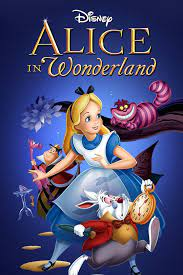

Alice's Adventures in Wonderland (commonly Alice in Wonderland) is an 1865 English novel by Lewis Carroll. The film premiered in London on July 26, 1951.
Over 30 potential songs were written, and many of them were included in the film—some for only a few seconds—the greatest number of songs of any Disney film.
The tale plays with logic, giving the story lasting popularity with adults as well as with children. The titular character Alice shares her given name with Alice Liddell, a girl Carroll knew.
What the film is about
A girl named Alice, who wishes for a more exciting world, takes a magical journey through a rabbit hole to a place called Wonderland. While there, she meets many kinds of creatures. A few main characters are the March Hare, the Mad Hatter, the Queen of Hearts, and of course the white rabbit. Throughout the movie, she is chasing the white rabbit and goes through many obstacles to find him and ask him what date he is very late for. She learns many lessons and gets very good (and sometimes confusing) advice. A twist: at the end, she realizes it is all a dream.
Click here to find out more.